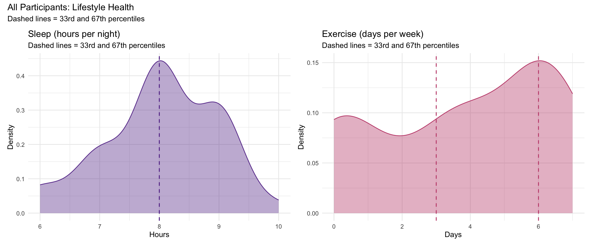
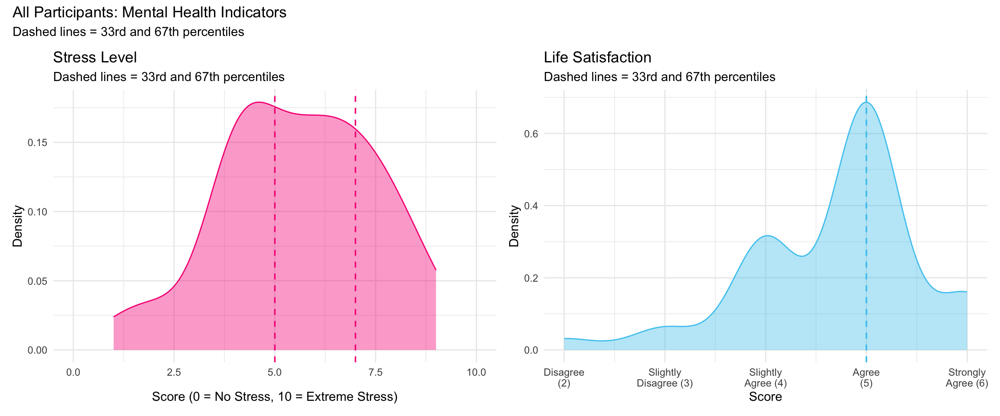
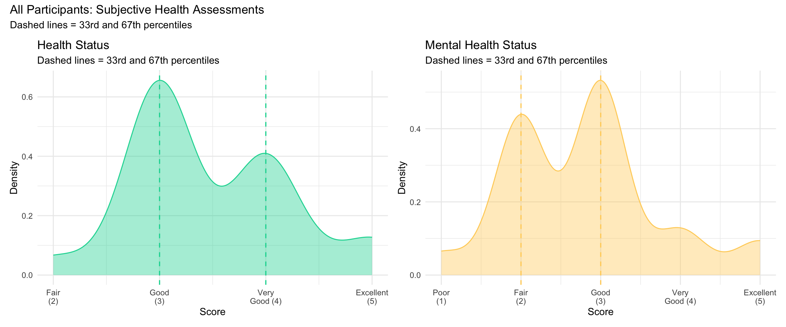
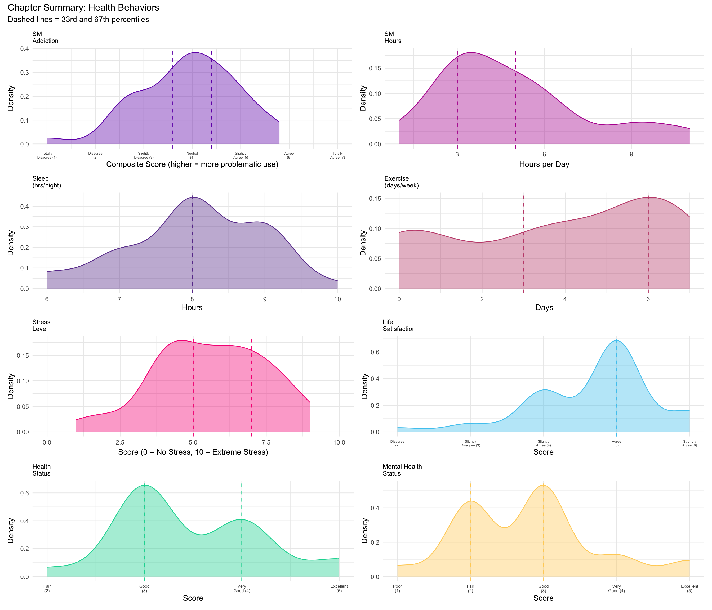
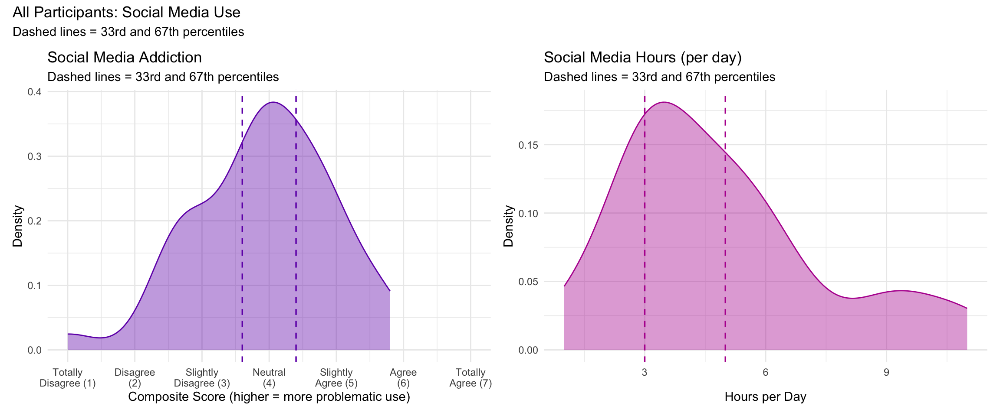

| Password | Sleep (hrs) | Sleep (%) | Exercise (days) | Exercise (%) |
|---|---|---|---|---|
| $iorrZZ2425! | 8 | 26% (low) | 2 | 28% (low) |
| '@Auliebear224757328el | 7 | 8% (low) | 4 | 41% (mid) |
| Benny2013 | 8 | 26% (low) | 0 | 0% (low) |
| Birth2005 | 8 | 26% (low) | 6 | 59% (mid) |
| Biscuit1227 | 8 | 26% (low) | 7 | 90% (high) |
| Damilola1976 | 6 | 0% (low) | 7 | 90% (high) |
| December1912 | 9 | 69% (high) | 6 | 59% (mid) |
| Goodwin7292()! | 8 | 26% (low) | 6 | 59% (mid) |
| Littlekitty1019 | 8 | 26% (low) | 3 | 31% (low) |
| Strawberryhamburger3 | 9 | 69% (high) | 3 | 31% (low) |
| Tinawatsonqwe1 | 7 | 8% (low) | 1 | 21% (low) |
| biotinISneeded2313! | 7 | 8% (low) | 6 | 59% (mid) |
| health1248 | 7 | 8% (low) | 4 | 41% (mid) |
| jelly1909 | 9 | 69% (high) | 0 | 0% (low) |
| kyunkyun3890 | 7 | 8% (low) | 6 | 59% (mid) |
8 Health Behaviors
This chapter examines your social media use patterns and positive health behavior profile. As health communicators, understanding your own relationship with social media — including potential problematic use — is essential for designing effective campaigns on digital platforms. Your health behaviors provide context for how lifestyle factors intersect with communication patterns.
ImportantPH 322 — Week 9: Channels
This week focuses on selecting communication channels (social media platforms) for your health campaign. Your social media use scores and platform preferences help you understand your own digital behavior and design channel strategies that reach diverse audiences.
8.2 Lifestyle Health
Sleep and exercise are foundational lifestyle behaviors that directly impact physical and mental health. This section pairs Sleep (hours per night) and Exercise (days of physical activity per week) to give you a snapshot of two key health behaviors that influence energy, cognition, stress management, and overall well-being.
Constructs
- Sleep: Self-reported average hours of sleep per night. Adequate sleep (typically 7–9 hours for adults) is associated with better cognitive performance, emotional regulation, and immune function.
- Exercise: Self-reported number of days per week with physical activity. Regular exercise is one of the strongest predictors of both physical and mental health outcomes.
Measures
- Sleep: A single item asking how many hours of sleep you typically get per night (continuous).
- Exercise: A single item asking how many days per week you engage in physical activity (0–7 days).
Your Scores
Class Distribution

8.3 Mental Health
Stress and life satisfaction are complementary indicators of mental well-being. Stress captures the burden of daily pressures, while Life Satisfaction reflects a broader cognitive evaluation of how well life is going. These two measures often move in opposite directions — higher stress tends to accompany lower life satisfaction — and together they provide a more complete picture of your psychological health.
Constructs
- Stress: Self-reported stress level on a 0–10 scale. Higher scores indicate greater perceived stress.
- Life Satisfaction: Overall satisfaction with life, reflecting a global cognitive judgment about one’s quality of life.
Measures
- Stress: A single item rated from 0 = No Stress to 10 = Extreme Stress.
- Life Satisfaction: A single item rated on a 6-point scale: 1 = Strongly Disagree to 6 = Strongly Agree.
Your Scores
| Password | Stress | Stress (%) | Life Satisfaction | Life Sat (%) |
|---|---|---|---|---|
| $iorrZZ2425! | 5 | 33% (low) | 5 | 33% (low) |
| '@Auliebear224757328el | 6 | 49% (mid) | 5 | 33% (low) |
| Benny2013 | 6 | 49% (mid) | 6 | 90% (high) |
| Birth2005 | 9 | 97% (high) | 5 | 33% (low) |
| Biscuit1227 | 4 | 8% (low) | 5 | 33% (low) |
| Damilola1976 | 8 | 85% (high) | 4 | 8% (low) |
| December1912 | 4 | 8% (low) | 5 | 33% (low) |
| Goodwin7292()! | 7 | 67% (high) | 4 | 8% (low) |
| Littlekitty1019 | 4 | 8% (low) | 4 | 8% (low) |
| Strawberryhamburger3 | 8 | 85% (high) | 2 | 0% (low) |
| Tinawatsonqwe1 | 8 | 85% (high) | 4 | 8% (low) |
| biotinISneeded2313! | 7 | 67% (high) | 5 | 33% (low) |
| health1248 | 6 | 49% (mid) | 4 | 8% (low) |
| jelly1909 | 5 | 33% (low) | 5 | 33% (low) |
| kyunkyun3890 | 4 | 8% (low) | 3 | 3% (low) |
Class Distribution

8.4 Subjective Health
Subjective health assessments capture how you perceive your own physical and mental health overall. Health Status and Mental Health Status are widely used single-item measures in public health research because they are strong predictors of objective health outcomes, healthcare utilization, and mortality. These self-ratings reflect an integrated judgment that incorporates factors you may not consciously articulate.
Constructs
- Health Status: Self-rated overall physical health, ranging from Poor to Excellent.
- Mental Health Status: Self-rated overall mental health, ranging from Poor to Excellent.
Measures
- Health Status: A single item rated on a 5-point scale: 1 = Poor, 2 = Fair, 3 = Good, 4 = Very Good, 5 = Excellent.
- Mental Health Status: A single item rated on a 5-point scale: 1 = Poor, 2 = Fair, 3 = Good, 4 = Very Good, 5 = Excellent.
Your Scores
| Password | Health Status | Health Status (%) | Mental Health | Mental Health (%) |
|---|---|---|---|---|
| $iorrZZ2425! | 5 | 92% (high) | 3 | 41% (mid) |
| '@Auliebear224757328el | 3 | 5% (low) | 4 | 85% (high) |
| Benny2013 | 3 | 5% (low) | 3 | 41% (mid) |
| Birth2005 | 3 | 5% (low) | 3 | 41% (mid) |
| Biscuit1227 | 5 | 92% (high) | 5 | 95% (high) |
| Damilola1976 | 3 | 5% (low) | 2 | 5% (low) |
| December1912 | 3 | 5% (low) | 2 | 5% (low) |
| Goodwin7292()! | 4 | 59% (mid) | 2 | 5% (low) |
| Littlekitty1019 | 3 | 5% (low) | 2 | 5% (low) |
| Strawberryhamburger3 | 3 | 5% (low) | 1 | 0% (low) |
| Tinawatsonqwe1 | 3 | 5% (low) | 2 | 5% (low) |
| biotinISneeded2313! | 5 | 92% (high) | 3 | 41% (mid) |
| health1248 | 3 | 5% (low) | 3 | 41% (mid) |
| jelly1909 | 3 | 5% (low) | 3 | 41% (mid) |
| kyunkyun3890 | 2 | 0% (low) | 2 | 5% (low) |
Class Distribution

Chapter Summary: All Health Behavior Indicators

References
Andreassen, C. S., Torsheim, T., Brunborg, G. S., & Pallesen, S. (2012). Development of a Facebook addiction scale. Psychological Reports, 110(2), 501–517. https://doi.org/10.2466/02.09.18.PR0.110.2.501-517
8.1 Social Media
Social media use is a critical consideration for health communicators. This section pairs two complementary measures: Social Media Addiction, which captures problematic patterns of social media engagement, and Social Media Hours, which quantifies the raw time spent on platforms each day. Together, these indicators reveal both the quantity and quality of your social media relationship.
Constructs
Measures
Example item (Addiction):
Your Scores
Class Distribution
